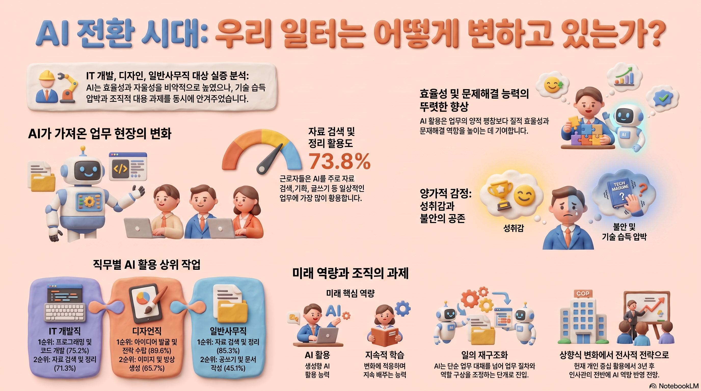

한국 AX의 변증법 — 확산과 전환 사이
국가는 확산을 만들고, 전환은 현장에서 멈춘다. 그 간극에 대한 컨텀DX의 관점.
관점 보기 →머신러닝과 데이터 과학이 제공하는 정밀한 예측과 최적화. 감이 아닌 근거로 의사결정의 기준을 바꿉니다.
제조·에너지·물류의 현장 공정과 시스템을 아는 컨설턴트가 설계합니다. 범용 솔루션이 아닌, 산업의 언어로 만든 답입니다.
기술은 조직이 받아들일 때 성과가 됩니다. 일하는 방식과 구조까지 함께 바꾸는 것이 하이브리드 인텔리전스입니다.
진단에서 내재화까지 네 단계. 각 단계의 산출물은 이사회 보고 수준을 기준으로 합니다.
C-level 관점의 AX/DX 진단과 전환 로드맵 수립. 이사회 보고 수준의 전략 산출물.
산출물 — 전환 전략 보고서 · 우선순위 로드맵
데이터 아키텍처 설계와 데이터 거버넌스 체계 수립.
산출물 — 데이터 아키텍처 설계서 · 거버넌스 체계
데이터 과학자·ML 엔지니어·데이터 엔지니어가 맞춤형 AI 모델과 파이프라인을 구축하고 프로덕션에 배포.
산출물 — 작동하는 AI 모델·파이프라인 · 프로덕션 배포
직원 재교육, 조직 구조 재설계, 운영 체계 이관으로 역량을 기업 내부에 내재화.
산출물 — 재교육 커리큘럼 · 조직 설계안 · 운영 이관
각 단계는 문서가 아니라 산출물로 끝납니다.
이사회 의결 수준의 전환 로드맵입니다.
정책·조직·표준을 하나의 체계로 만듭니다.
모델·파이프라인·인프라 전체 청사진입니다.
문서가 아닌, 작동하는 시스템입니다.
조직에 내재화되는 역량을 설계합니다.
재무 언어로 성과를 증명합니다.
인천의 한 자동차 부품 제조사, AI가 아니라 순서를 처방한 이야기
인천의 한 자동차 부품 제조사. 라인은 돌아가고 있었고, 이익도 나고 있었다. 대표는 디지털 전환이 필요하다는 것을 알고 있었다. 회사 소개서에도, 대외 홍보에도 ‘스마트’라는 단어가 들어갔다. 그러나 정작 투자 앞에서는 늘 같은 질문이 돌아왔다.
“정부 지원은 받을 수 있습니까?”
자동화 설비조차 지원사업 없이는 도입한 적이 없는 회사였다. 실패의 부담은 컸고, 이익은 아직 나고 있었다. 서두를 이유가 없어 보였다.
현장에서 확인한 것은 AI 이전의 문제들이었다. 메일 서버는 수시로 다운되고 용량은 늘 부족했다. 협업 프로세스는 없었다 — 일은 전화와 구두, 개인 엑셀로 흘렀다. 부서 사이의 벽은 높았고, 정보는 흐르지 않았다. 그리고 프로세스 혁신이라는 말 자체가 조직에 낯설었다. 그래도 이익은 나고 있었기 때문이다.
이 회사에 필요한 것은 AI가 아니었다. 진단 결과는 한 문장으로 보고되었다.
“지금 AI를 도입하면 반드시 실패합니다. 그리고 그 실패는 ‘역시 우리는 안 된다’는 확신만 남길 것입니다. 순서가 있습니다.”
세부 문안 확정 예정.
세부 문안 확정 예정.
세부 문안 확정 예정.
세부 문안 확정 예정.
대표의 질문이 바뀌었다.
“정부 지원 받을 수 있나?”에서 — “다음 단계는 뭔가?”로.
한국의 수많은 제조 중소·중견기업이 이 회사와 같다. 이익은 나고, 위기는 보이지 않고, AI는 어딘가 남의 이야기다. 그러나 전환의 실패는 대부분 기술에서 오지 않는다. 순서를 건너뛴 데서 온다.
메일도 멈추는 회사에 AI를 파는 것은 컨설팅이 아니다.
컨텀DX는 순서를 설계합니다.
전사 AI 전환 전략과 실행. 진단에서 로드맵, 실행 거버넌스까지.
데이터 자산화, 거버넌스, 플랫폼 구축. AI가 설 수 있는 기반부터.
맞춤형 AI 모델·ML 파이프라인·에이전트 시스템 구축과 프로덕션 운영.
임직원 재교육과 AI 조직 설계. 역량이 남는 전환.
시스템을 납품하고 떠나는 것이 아니라, 조직에 내재화시켜 우리가 떠난 후에도 자생하게 합니다.
조직 설계, 역할 정의, 역량 구축까지 동행합니다.
특정 벤더·솔루션에 중립적으로, 상황에 맞는 최적을 설계합니다.
PoC의 무덤이 아니라, 프로덕션의 성과로 말합니다.
설명 가능하고 책임 있는 AI로 신뢰를 구축합니다.
15년 이상의 엔터프라이즈 시스템(ERP·PLM·MES)과 AI 전환 실무 경험을 가진 리더십이 프로젝트를 직접 이끕니다. 전략 컨설턴트와 엔지니어가 분리되지 않은, 하나의 실행 조직입니다.
대표이사 · 산업 AX/DX 전략, 엔터프라이즈 시스템 15년+
최고기술책임자 · ML 엔지니어링, 데이터 플랫폼 아키텍처
역대 최대의 AX 예산, 세계에서 가장 이른 AI 기본법 전면 시행, 전국의 AI 혁신거점. 한국의 AI 전환은 국가 단위로 가속되고 있습니다.
데이터는 외부 서버에 묶여 있고, 과제는 종료와 함께 방치되며, PoC는 프로덕션에 도달하지 못합니다. 실패의 원인은 기술이 아니라 — 문제 정의의 부재, 데이터 주권의 부재, 조직 역량의 부재입니다.
컨텀DX는 국가가 만든 확산의 자원을, 기업 내부의 전환으로 번역합니다. 문제 정의에서 시작해 데이터 주권을 회복하고, 프로덕션에 배포하며, 조직에 내재화합니다. 확산은 밖에서 오지만, 전환은 안에서 완성됩니다.
정부 주도 확산(正)도, 회의적 냉소(反)도 아닌 제3의 길 — 확산의 자원을 활용하되, 전환의 질은 기업 내부에서 완성합니다.
확산은 정책이 하지만, 전환은 체질이 합니다.
모든 인사이트는 경영진 보고 수준의 깊이로 작성됩니다.

국가는 확산을 만들고, 전환은 현장에서 멈춘다. 그 간극에 대한 컨텀DX의 관점.
관점 보기 →AI 에이전트가 업무의 단위를 바꿀 때, 조직 구조는 어떻게 달라져야 하는가.
Read →AI가 프로덕션에 도달하지 못하는 이유, 그리고 도달하게 만드는 조건.
샘플 리포트 보기 →영업일 기준 2일 이내에 회신합니다.
담당 파트너가 곧 연락드리겠습니다.